使用Intellij IDEA配置Tomcat JSP工程过程记录
最近开始参与一个相关的大坑，第一次接触到了JSP服务器。原来的项目是基于一个收费的IDE，正版狗果断不能忍啊- -于是开始尝试使用Intellij IDEA配置项目，一次就配置成功了也是很好运- -遂记录如下。
这里我使用的是学生邮箱加持的Intellij IDEA Ultimate，不过社区版应该也是没问题的社区版有很多功能被阉割掉了，所以本文仅适用于Intellij IDEA Ultimate。
出于保密目的，以下截图敏感信息（包括项目目录名等）均被遮盖- -
前提
阅读本文之前，你需要了解并准备好项目所需的运行环境（jdk、Tomcat等），并对Jetbrains的IDE有初步了解。
获取源码
通过git从仓库拉取源码，源码的目录结构大概如下：
the-project-directory
+ resources
+ src
+ src_jar
+ test
+ WebContent
- .gitignore
- generatorConfig.xml其中我们感兴趣（知道）的是：src包含服务器后端的源码，WebContent包含了JSP服务器的配置和网站根目录内容。
使用IDE打开项目（而不是导入项目），如下图中的Open：
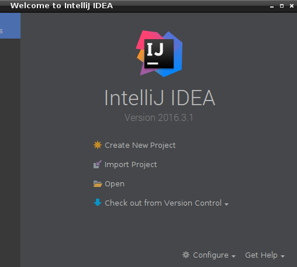
初次打开项目之后，IDEA会检测到项目中的web.xml配置文件，并询问是否根据该文件配置该项目为Web应用，这里我们点击同意。也可以在Event Log面板找到该消息。
配置JDK
要运行服务器，需要配置JDK和Tomcat服务器。Tomcat的配置我会放到后面说明。
在IDEA中，进入菜单File - Project Structure...，在左边选择SDKs，点击加号，选择JDK，选择jdk安装目录jdk1.7.0_79，这个目录的内容应该如下：
jdk1.7.0_79
+ bin
+ db
+ include
+ jre
+ lib
+ man
+ ...添加之后结果如下：
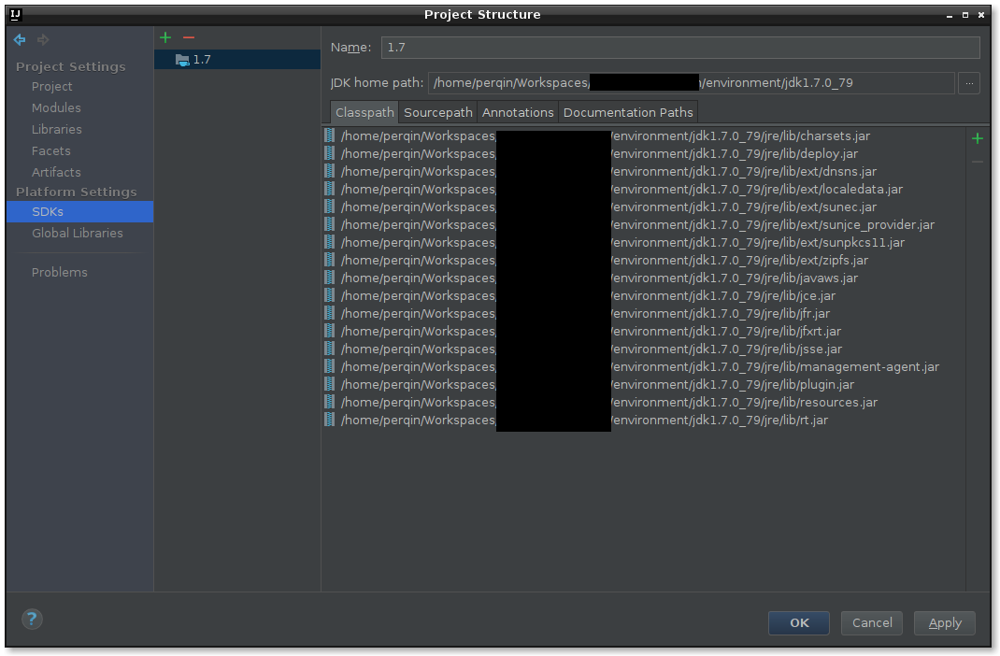
接下来，切换到Project，在右侧选择项目SDK为刚刚设置的jdk，同时把项目语言等级改为7，把项目编译输出目录改为repo源码以外的目录，否则编译和构建生成的内容会被IDE索引而影响使用。
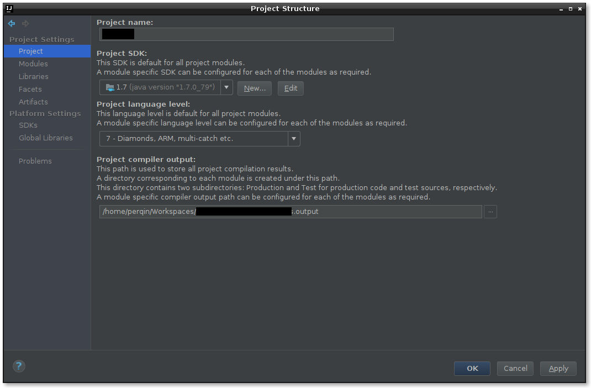
接下来切换到Modules，会发现模块内已经包含了一个Web子模块，他就是IDE检测到web.xml之后自动生成的。如果没有，你可以选中模块，然后点击模块列表上面的加号选择Web，然后在右侧的Deployment Descriptors点击右边的加号选择你的web.xml文件。
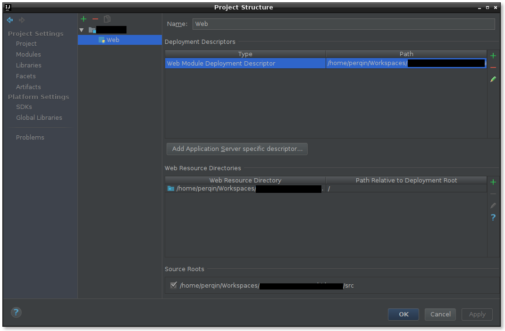
我们需要为这个module配置源码目录和依赖。在module列表中选中模块（而不是Web条目），然后在右边的Sources标签下，选中src目录，右键标记为Sources，此时这个目录就会变成蓝色。
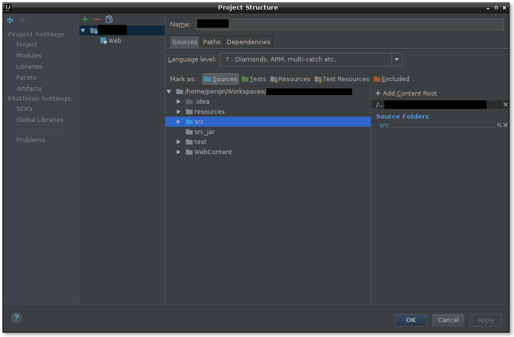
再切换到Dependencies标签，点击右边的加号把所需的jar文件和目录（如某些包含jar文件的lib目录）添加进来。
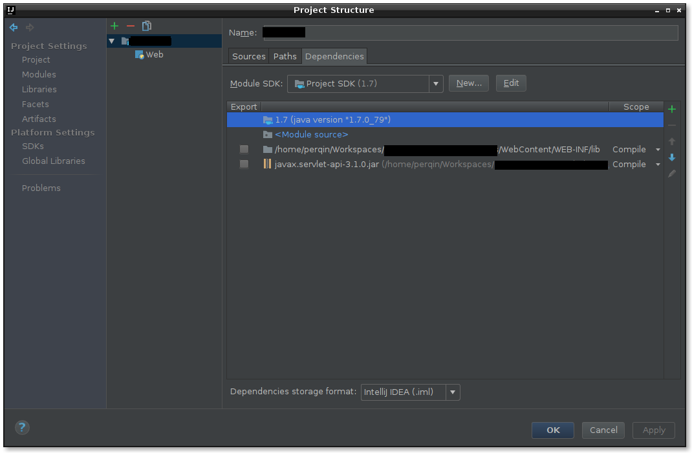
最后，我们前往左边的Artifacts，配置最后的制品。
点击制品列表顶部的加号，选择Web Application: Explored - From Modules...，在列表中选择刚才配置的module，会发现IDE自动帮你配置好了生成目录的内容：Web模块的网站根目录、模块的编译输出（class文件）、所需的jar依赖等。
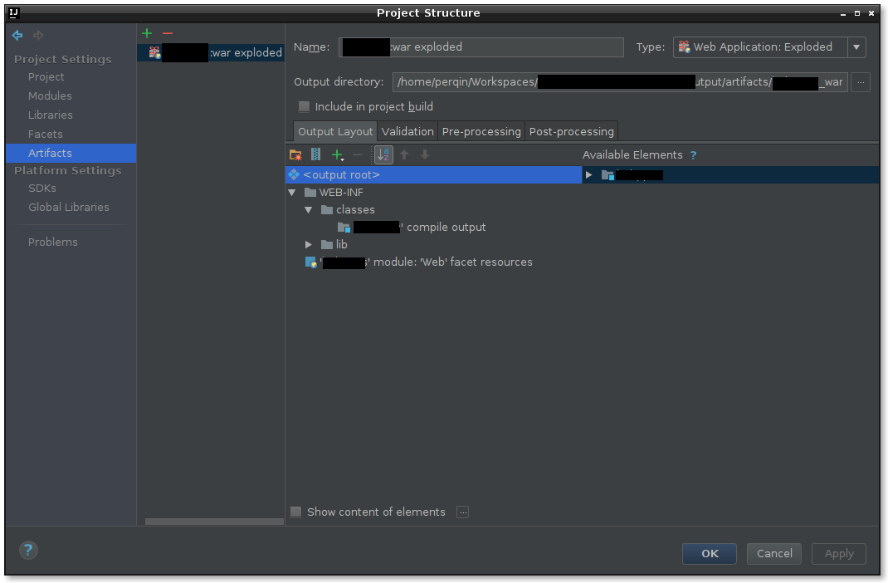
到此为止，我们已经配置好用于部署的项目输出了。
配置Tomcat自动部署
接下来我们配置Tomcat。我们需要保证IDEA安装了Tomcat and TomEE Integration插件并启用，前往File - Settings并在左侧选择Plugins，在右侧找到该插件并打勾确保被启用。如果没有找到，可以点击下面的Install jetbrains plugins...安装。
插件启用之后，我们打开菜单Run - Edit Configurations...，然后点击左上角的加号：Tomcat Server - Local，在右侧可以进行配置。下图是我事后截取的，在你的IDE中，大部分配置可能还未完成。
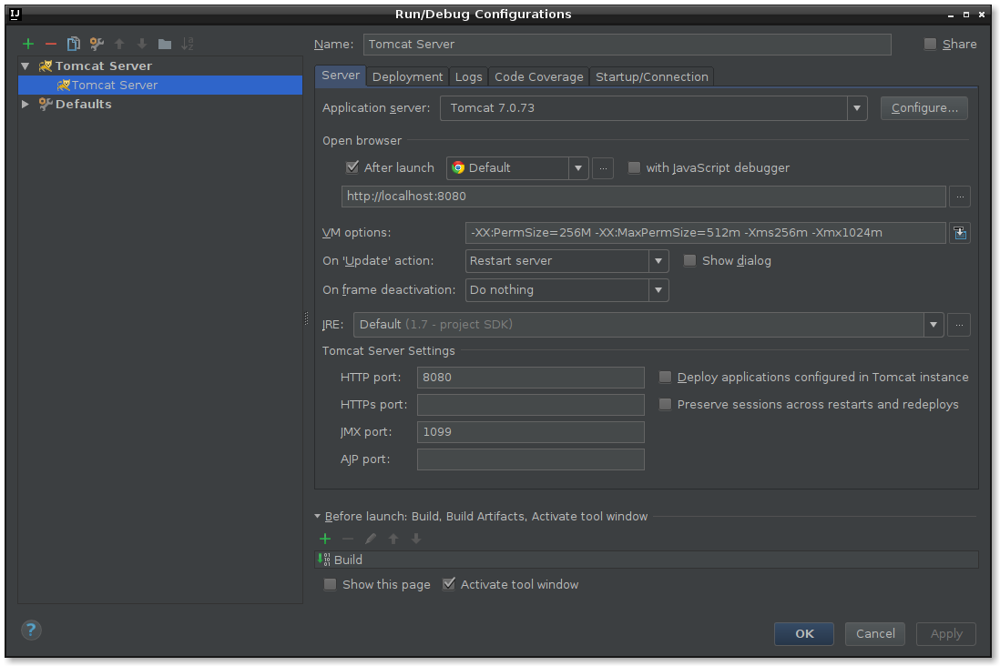
首先点击Application server选项右侧的Configure...按钮添加Tomcat服务器，在对话框中，同样点击左上角的加号，在又一个新的对话框中的Tomcat Home中选择Tomcat的根目录apache-tomcat-7.0.73，这个目录的内容应该如下所示：
tomcat-7.0.73
+ bin
+ conf
+ lib
+ logs
+ temp
+ webapps
+ work选择之后，IDE会自动检测出Tomcat的版本和基目录，点击确定。
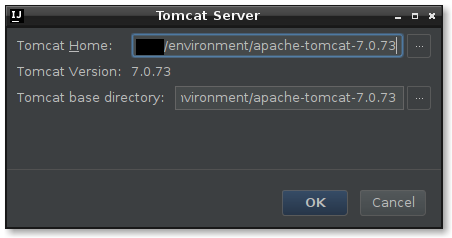
回到刚刚的Application Servers对话框，此时Tomcat的服务器的路径已经配置好，直接点击确定即可。
最终回到运行配置对话框，在Application server选项可以选择刚刚配置的Tomcat了。接下来需要做以下配置：
- 在
Open browser中可以设置运行之后自动用浏览器打开指定URL，我们的项目将运行在http://localhost:8080中，因此我们默认即可。 - VM Options可以设置一些虚拟机的参数，如
-XX:PermSize=256M -XX:MaxPermSize=512m -Xms256m -Xmx1024m - JRE中选择之前配置的JDK版本
此时，你的Run/Debug Configurations对话框的内容就会和我前面提供的截图相似了。最后，我们切换到Deployment标签，点击中间的加号，选择Artifacts，你之前配置的artifact会被自动添加，在右边设置上下文为/，这样我们就可以在localhost:8080中访问你的制品了。
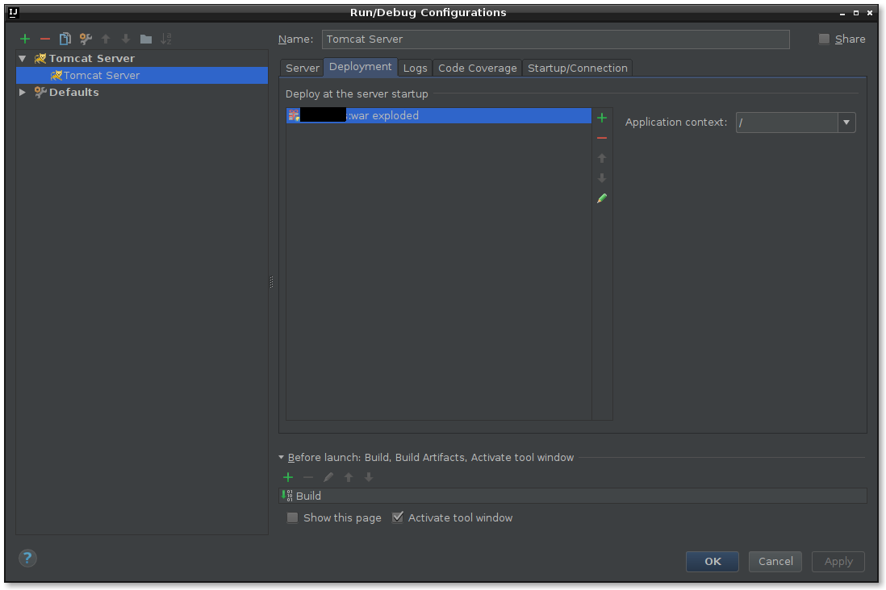
到此为止，我们已经可以让服务器启动了，我们点击确定保存。
运行服务器
到此为止，我们已经配置完成了，点击工具栏中运行按钮（绿色播放按钮）左边的列表选择刚刚的运行配置，然后点击右边的运行，Run面板会打开，等待若干分钟，随着日志不停输出，你的artifact的部署状态最终变成绿色的OK，然后就会自动打开浏览器进入主页了。
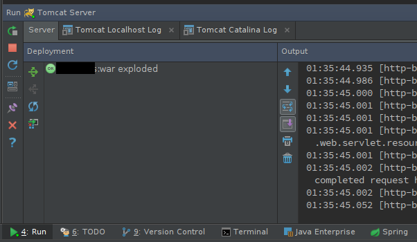
当你修改了代码之后，点击Run面板左侧的蓝色旋转箭头，在弹出的对话框中选择Restart Server即可重新编译并部署。当然，你也可以只选择Redeploy重新部署而不重启Tomcat，此时IDE将尝试热替换classes，如果这个选项并未令你的修改生效，就使用Restart Server吧！